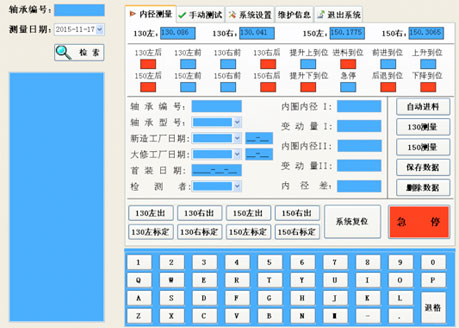
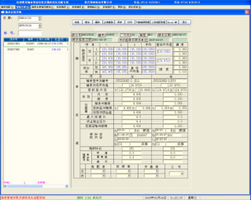
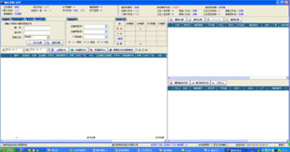
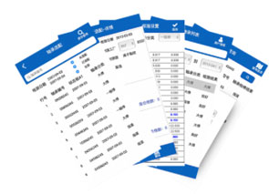

案例：轴承智能选配系统
“轴承智能检测及优化选配系统”由轴承内径测量仪、轴颈测量仪、选配系统三部分组成。
轴承检测仪能正常测量轴承内圈内径、轴颈直径等各部分数据，轴承内径测量采用进囗传感器和便携式内径测量尺检测轴承内径，通过无线传输给手机并显示，在手机上自动计算变动量、平均值、超限报警，通过无线将数据发往主机。
轴径测量仪配上不同的检测支架后可对各种型号的轮轴轴颈直径及防尘板座直径作准确测量。该设备具有测量精度高、使用方便、便于携带等优点。
将云终端技术、移动端技术嵌入到相关终端设备中，移动智能终端与轴承内径检测机、轮对轴颈测量机、轴承立体库等设备的数据同步，实现设备数据交互及智能选配。 将现有检测手段与实际要求相结合，以便携性、可靠性、数据共享为主要目标对轴承内径、轴颈直径进行检测，轴承轴颈选配进行归纳分析。实现了精确测量、数据交互、数据共享等功能；
提高检测的自动化水平、准确度及效率，消除对人员的依赖，提高产品质量；通过检测轴颈的尺寸，进行轴承智能优化自动选配，使轴承自动化流转，提高零部件物流流转的自动化水平，减少自动化线中参与人员的数量；实现检测数据的实时采集、存储，并对组装零部件相关尺寸进行对比分析，选取合适的装配零部件，提高后工序的装配质量，避免人为因素造成误差，可实现铁路货车轴承的智能存放并在压装时实现与轮对的自动选配以达到最优化选配的目的。
实现快速测量判断内外热靶、挡板、档板电机、大门电机是否正常；缩短故障判断时间，在很大程度上减少了人员上线作业时间，达到快速处理的要求。
-
轴承数据
 -
轴颈数据

优化选配
根据轴颈的数据来选配合的轴承，然后通过数据共享，把轴承输送到各自压装工位。
- 
- 